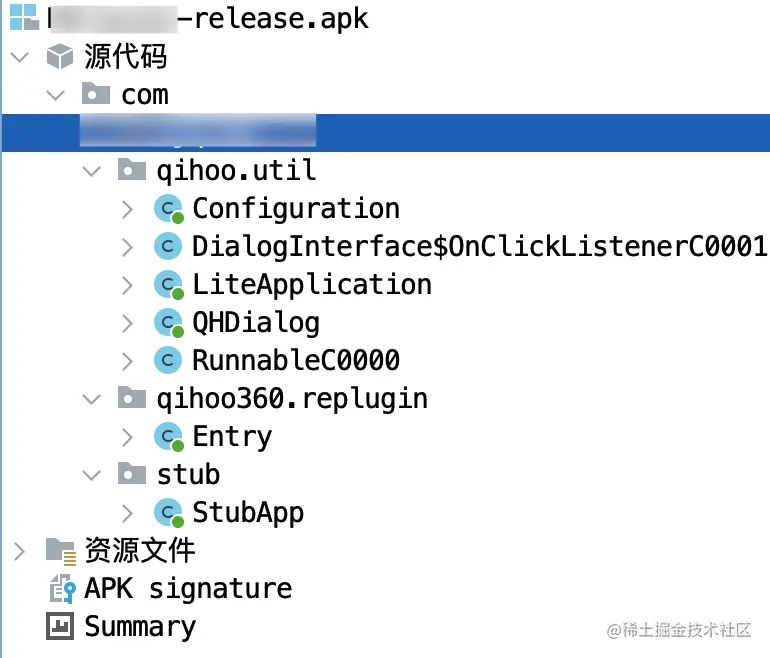
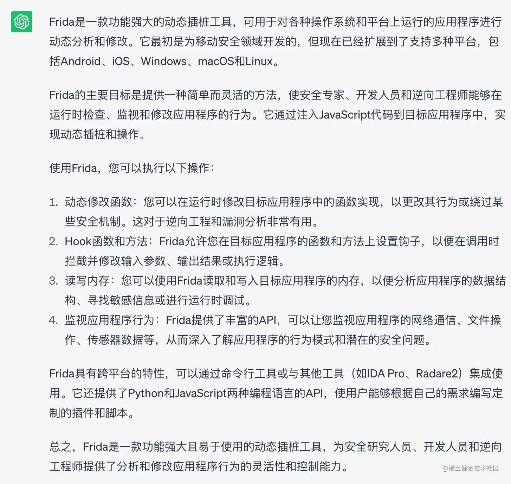
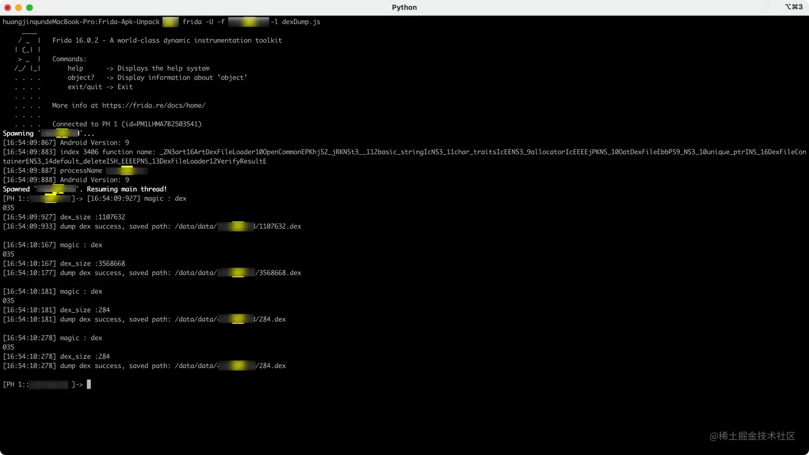
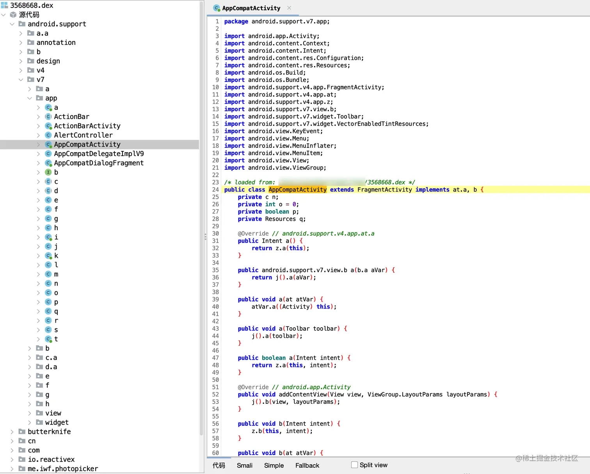

前言
什么是加固
加固本质上就是对 dex 文件进行加壳处理，让一些反编译工具反编译到的是 dex 壳，而不是 dex 文件本身。具体的实现方式是，将原 dex 文件进行加密，再合成到 dex 壳中，而系统运行应用的时候，会加载 dex 壳文件，而 dex 壳里面有一个自定义的 ClassLoader 类，它会将原有 dex 文件进行解密，然后再加载到 dex 数组中。
什么是脱壳
脱壳就对应着加壳，我们要对这层壳脱掉，漏出它原本的样子，再简单点讲就是破解加固，市面上比较常见的脱壳手段就是《内存 dump》，刚刚我们讲到的，系统会加载壳 dex，壳 dex 才会加载原 dex，那这个时候原 dex 已经被加载到内存中了，我们只需要从内存中把它 dump 出来就可以了，这个原理是不是灰常简单呢？
以下使用 360 加壳过的 apk，拖到 jadx 打开是这样子的，这个就是壳的源码。

了解 frida
说到脱壳，我们先认识一个东西：frida，它能够帮我们从内存 dump 出原 dex 文件，why？什么是 frida，这个问题就由 ChatGPT 替我解答这个问题

- 简单理解 frida 就是一个跨平台的 hook 框架，那什么是 hook 框架呢？顾名思义，hook 是钩子的意思，在代码中，代表用钩子勾住代码，那么勾住代码有什么用呢？在实际开发中，我们常常在需要代码前后插入一段代码，比较常见的情况是计算方法的耗时，那么这个时候在方法前后各插入代码，常规的写法是直接在某个类的某个方法中写代码，这种做法的好处是代码看起来比较直观，但是一旦需要写的地方比较多的时候，前期开发和后续维护的工作量会呈几何增长，而 hook 框架可以解决这一问题，它可以帮你动态植入这些代码，不需要在每个方法写一遍重复代码，使用了面向切面的思想，类似 AOP，但它又不是 AOP，AOP 和它的区别在于，AOP 是在编译的过程中就会帮你植入代码，而 hook 框架是在运行的过程中植入代码。
电脑 frida 环境搭建
我们这里用的是 macOs 系统进行演示，windows 步骤也差不多
安装 frida
pip install frida
- 如果安装成功则会提示
Installing collected packages: frida
Successfully installed frida-16.0.2
安装 frida-tools
pip install frida-tools
- 如果安装成功则会提示
Successfully installed colorama-0.4.6 frida-tools-12.0.1 prompt-toolkit-3.0.32 pygments-2.13.0 wcwidth-0.2.5
- 如果安装过程出现警告，提示以下信息的话
WARNING: The script pygmentize is installed in '/Users/xxx/Library/Python/3.8/bin' which is not on PATH.
Consider adding this directory to PATH or, if you prefer to suppress this warning, use --no-warn-script-location.
WARNING: The scripts frida, frida-apk, frida-compile, frida-create, frida-discover, frida-join, frida-kill, frida-ls, frida-ls-devices, frida-ps, frida-pull, frida-push, frida-rm and frida-trace are installed in '/Users/xxx/Library/Python/3.8/bin' which is not on PATH.
Consider adding this directory to PATH or, if you prefer to suppress this warning, use --no-warn-script-location.
- 在环境变量中加入以下配置即可
export PATH="/Users/xxx/Library/Python/3.8/bin":"$PATH"
测试 frida 安装
frida --v
// 或者
frida --version
- 如果有输出 frida 的版本号的话，则证明已经安装成功了
16.0.2
- 补充：如果需要安装 frida 指定版本，则需要修改安装命令行为下面这样即可
pip install frida==12.8.0
pip install frida-tools==5.3.0
- frida 和 frida-tools 版本之间的对应关系可以从 Github 发布的 relese assets 看到
Frida 手机环境搭建
前提条件：需要准备一台已经 root 的手机
获取手机 CPU 处理器架构
adb shell getprop ro.product.cpu.abi
arm64-v8a
下载 frida-server
到 Github 发布的 releases assets 中下载对应 CPU 处理架构的 frida-server，然后进行解压，这里下载的是 frida-server-16.0.2-android-arm64.xz，注意 frida-server 需要和之前电脑安装版本一致才可以
将so库发送到手机
将下载好的 so 库通过 adb 命令复制到手机 /data/local/tmp 目录上面
adb push /Users/xxx/Downloads/frida-server-16.0.2-android-arm64 /data/local/tmp
如果想修改复制到的 frida-server 文件名称，则将上面的命令行换成下面的即可
adb push /Users/xxx/Downloads/frida-server-16.0.2-android-arm64 /data/local/tmp/frida-server-16.0.2
使用 adb 切换到 /data/local/tmp 目录下
adb shell
su
cd data/local/tmp
// 表示可读可写可执行
chmod 777 frida-server-16.0.2
运行 Frida
运行手机上面的 frida-server 的命令，执行后会阻塞当前命令窗口，这个是正常的，如果是阻塞了一会儿就重启，证明是不正常的，可以换个手机试一下
adb shell
su
cd data/local/tmp
./frida-server-16.0.2
验证是否成功
验证是否成功， 重新创建一个命令行窗口，输入以下命令来查看当前手机进程列表
frida-ps -U
如果出现以下错误提示，则需要将手机数据线拔下来重新插一次，然后重新运行一遍上面的命令即可
Failed to enumerate processes: unable to handle 64-bit processes due to build configuration
如果出现以下错误提示，证明端口被占用了，可以重启一下手机
Unable to start: Could not listen on address 127.0.0.1, port 27042: Error binding to address 127.0.0.1:27042: Address already in use
如果出现以下信息，则表示 Frida 已经安装成功
PID Name
----- -----------------------------
3374 Google
12041 Magisk
10795 QQ
12776 企业微信
3720 当前界面
8697 微信
9401 相册
............
最后再进行端口映射
adb forward tcp:27042 tcp:27042
使用 Frida-Apk-Unpack 进行脱壳
下载 Frida-Apk-Unpack 工程
git clone https://github.com/GuoQiang1993/Frida-Apk-Unpack.git
cd /Users/xxx/Desktop/FridaProject/App/Frida-Apk-Unpack
执行脱壳指令
// xxx.xxx.xxx 是应用的包名
// dexDump.js 是工程目录下的文件
frida -U -f xxx.xxx.xxx -l dexDump.js --no-pause
如果失败了，并提示以下信息
usage: frida [options] target
frida: error: unrecognized arguments: --no-pause
则换成下面这个命名再执行
frida -U -f xxx.xxx.xxx -l dexDump.js
如果失败了，并提示以下信息
Failed to spawn: unable to access PID 765 (zygote64) while preparing for app launch; try disabling Magisk Hide in case it is active
解决这个问题也很简单，只需要关闭 MagiskHide 功能
Magisk 管理器 -> 设置 -> Magisk 选项 -> MagiskHide（关闭即可）
又或者执行以下命令行来关闭
adb shell "su -c magiskhide disable"
完事之后可以执行以下命令行来开启
adb shell "su -c magiskhide enable"
最终效果展示

[PH 1::xxx.xxx.xx ]-> [16:54:09:927] magic : dex
035
[16:54:09:927] dex_size :1107632
[16:54:09:933] dump dex success, saved path: /data/data/xxx.xxx.xxx/1107632.dex
[16:54:10:167] magic : dex
035
[16:54:10:167] dex_size :3568668
[16:54:10:177] dump dex success, saved path: /data/data/xxx.xxx.xxx/3568668.dex
[16:54:10:181] magic : dex
035
[16:54:10:181] dex_size :284
[16:54:10:181] dump dex success, saved path: /data/data/xxx.xxx.xxx/284.dex
[16:54:10:278] magic : dex
035
[16:54:10:278] dex_size :284
[16:54:10:278] dump dex success, saved path: /data/data/xxx.xxx.xxx/284.dex
其中 /data/data/xxx.xxx.xxx/1107632.dex、/data/data/xxx.xxx.xxx/3568668.dex、/data/data/xxx.xxx.xxx/284.dex 这几个就是脱壳之后得到真实的 dex 文件存放路径了，我们再使用 jadx 随机打开一个 dex 看看
